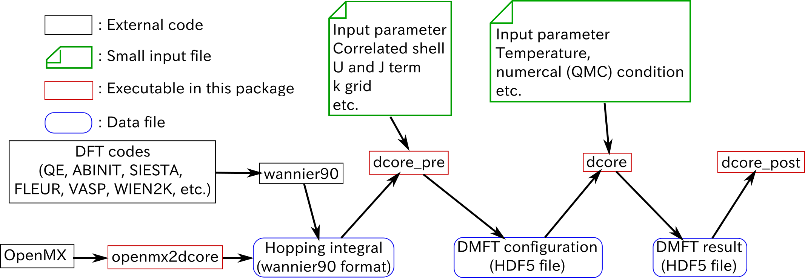

Minimum introduction: Structure of DCore¶
Data flow¶
DCore contains a set of programs which perform dynamical mean-field theory (DMFT) calculations for models and materials. The structure of programs and data flow is summarized below.
{kind=link}
DCore consists of three layers: (i) interface layer, (ii) DMFT loop, and (iii) post-processing.
Those are respectively performed by the executables dcore_pre, dcore, and dcore_post.
Input parameters are provided by a single text file, which is read by all the three programs.
Data generated by dcore_pre and dcore are severally stored in a file with HDF5 format and passed to the next process.
(i) The interface layer dcore_pre¶
dcore_pre generates a HDF5 file necessary for the DMFT loop.
Users specify parameters defining a model such as hopping parameters on a certain lattice, and interactions.
The hopping parameters are given either for preset models (e.g., square lattice, Bethe lattice) or using Wannier90 format
(ii) DMFT loop dcore¶
dcore is the main program for the DMFT calculations.
The effective impurity problem is solved repeatedly to fulfill the self-consistency condition of the DMFT.
For solving the impurity problem, dcore calls an external program such as the continuous-time quantum Monte Carlo method and the Hubbard-I approximation.
(iii) Post-processing dcore_post¶
dcore_post computes some physical quantities from the converged solution of the DMFT loop.
Currently, the following quantities can be calculated:
(projected) density of states
Correlated band structures (momentum-resolved single-particle excitation spectrum)